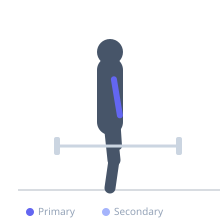
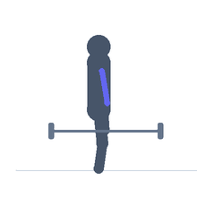

Exercise guide / Barbell Preacher Curl
Barbell Preacher Curl
The barbell preacher curl uses a preacher bench to brace the upper arms on an angled pad, eliminating any chance of swinging and fixing the elbow position. The braced arm position pre-loads the biceps in a lengthened state and forces strict elbow flexion. The preacher position emphasizes the lower portion of the bicep and the brachialis. It was popularized by Larry Scott, the first Mr. Olympia.
Primary muscles
biceps brachii short head
brachialis
Secondary muscles
biceps brachii long head
Equipment
Standard Barbell
Preacher Bench


Starting position
- Sit at a preacher bench. Rest the upper arms on the slanted pad. Hold a barbell with a supinated grip, arms nearly fully extended.
Setup
- Adjust the seat height so the top of the pad is at armpit level. Grip the bar at shoulder width.
Steps
- Step 1: Begin with the elbows nearly fully extended, feeling the stretch.
- Step 2: Curl the barbell upward, bending the elbows until maximum flexion is reached.
- Step 3: Hold briefly at the peak.
- Step 4: Lower slowly, resisting the weight all the way down — do not drop.
Coaching cues
- Arms stay on the pad
- Control the bottom — don't drop it
- Stop just before lockout
Breathing
- Exhale on the curl, inhale on the return.
Range of motion
- Stop just short of full elbow extension at the bottom; curl to full flexion at the top.
Tempo
- 2-1-3-0
Common mistakes
- Dropping the bar at the bottom — control the full eccentric
- Locking out the elbows fully at the bottom (high injury risk)
- Flaring the elbows off the pad
Safety
- Never lock out fully with heavy weight — stop just short of full extension to protect the elbow joint
- The bicep tendon is at risk with heavy dropped eccentrics
Training
- hypertrophy: 8–12 reps
- hypertrophy: 3–4 sets
- Rest: {'hypertrophy': 75}